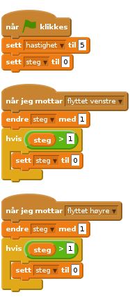
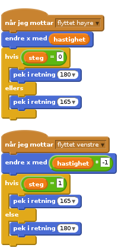

Nivå 4
Scratchkort - Bein
steg variabel, så hver gang melding om bevegelse mottas, øker vi variabelen med 1. Hvis variablen går høyere enn 1 (vi kan teste dette med større enn operatøren >) nullstiller vi den.
steg variabel. Når variabelen blir satt til null kan vi bytte retning på beinet (her har vi brukt en fast retning for å hindre at beinet går amok hvis variabelen og graden på vinkelen ikke stemmer, men kanskje vil du at monstret skal gjøre det!). Ikke glem å flytte beina langs kroppen ved å bruke hastighet variabel.
Du kan bruke samme type handling for å lage armer som vinker, eller fuglevinger som flakser.